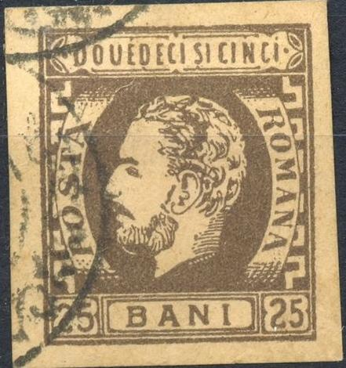
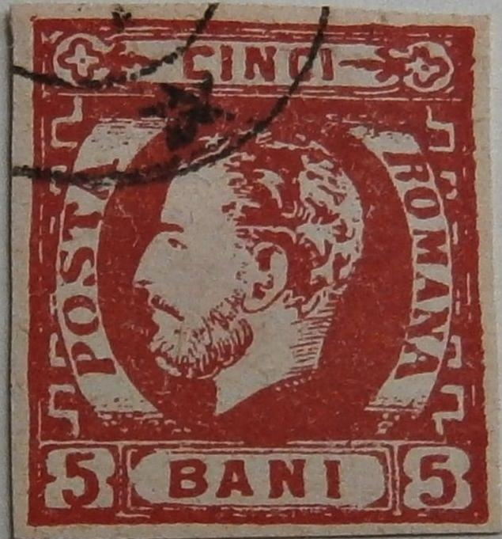
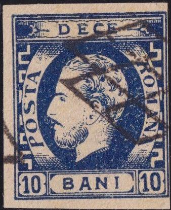

Forgeries with "FAUX" overprint (Fournier?)
Return To Catalogue - Rumania 1871 issue (king with full beard) - Rumania 1871 issue (king with full beard), forgeries part 2 - Rumania - Cancels on stamps of Rumania
Note: on my website many of the
pictures can not be seen! They are of course present in the
catalogue;
contact me if you want to purchase it.
Rumania 1871 issue (king with full beard)
Rumania 1871 issue (king with full beard),
forgeries part 2
Forgeries exist of these stamps. According to 'The Forged Stamps of all Countries' by J.Dorn, most of the cancellations on the 50 b value are forged. Examples:
Forgeries with "FAUX" overprint (Fournier?)


Forgeries; in the 10 b forgery, there is a wavy line on top of
the "I" of "BANI"

Slightly different forgery of the 25 b value, the beard is very
neatly 'combed'.

Probably a Fournier forgery, with forged "JASSY 10 8
FRANCO" cancel. There is a wavy line on top of the
"I" of "BANI"

Some of the above Fournier forged cancels were used on the above
forgeries (barely discernable)
Fournier album with forgeries of this and the following issue.


Forgery of the 5 b value with different lettering, for example
the "P" of "POSTA" has a very thick stem. The
"A" of this word has a serif at the right hand side.


Forgery of the 25 b with the upper text quite different (compare
the "S" of "SI"), the eyebrow is more
slanting, the "T" of "POSTA" more straight,
the "A" of "POSTA" is placed too low (with
respect to the ornaments to the left of it) etc. The word
"POSTA" is placed too far to the left. This is the
forgery set described in Album Weeds. I've also seen this forgery
uncancelled. Next to it the 5 b and 10 b made by the same forger.
One of the stamps has a typical 'VF'
cancel.



Forgeries of the 10 b yellow and blue. The "P" of
"POSTA" seems squeezed and is too close to the border
on the left of it. The head of the King is too white in my view.
They often appear with very large margins and cancel
"PITESCTI 15 9 * DIM *". The 5 bani was probably made
by the same forger.
For Rumania 1871 issue (king with full beard), forgeries part 2, click here.
{kind=link}
{kind=link}
{kind=link}